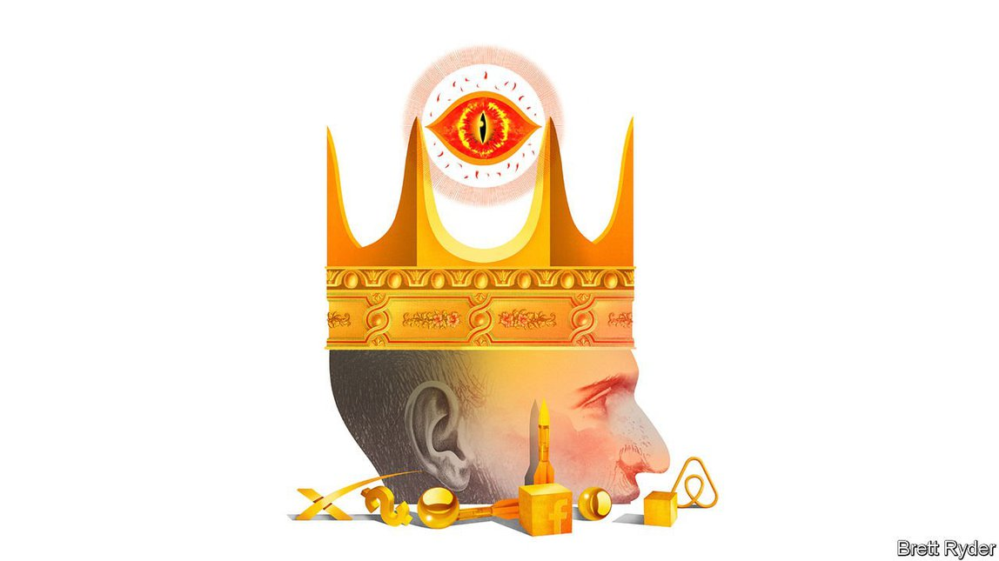

2021-10-08T15:47:44+00:00
Schumpeter
熊彼特
熊彼特
Peter Thiel, scourge of Silicon Valley
彼得·蒂尔，硅谷之祸
彼得·蒂爾，硅谷之禍
A venture capitalist reinvents the military-industrial complex
一名风险资本家重塑军工复合体
一名風險資本家重塑軍工複合體
FOR A MAN who wants to live for ever, Peter Thiel has already done enough in his 53 years to leave mere mortals exhausted—and mostly frustrated. The venture capitalist, techno-Utopian and scourge of the liberal left is a myriad of contradictions.
对于一个想要永生的人来说，彼得·蒂尔（Peter Thiel）在他活过的53年里所做的事已经足以让肉身凡胎们精疲力尽——且沮丧不已。这个风险投资家、技术乌托邦主义者、自由主义左派眼中的祸害就是一个矛盾集合体。
對於一個想要永生的人來說，彼得·蒂爾（Peter Thiel）在他活過的53年里所做的事已經足以讓肉身凡胎們精疲力盡——且沮喪不已。這個風險投資家、技術烏托邦主義者、自由主義左派眼中的禍害就是一個矛盾集合體。
He co-founded PayPal, a payments platform that, as a young libertarian, he hoped would undermine the world’s monetary system. Instead it gave him the money to bestride Silicon Valley, a place he disdains. He was the earliest outside investor in Facebook, a tech giant on whose board he remains, though he mocks social media. As a hedge-fund manager, he bet on an economic meltdown in America ahead of the financial crisis of 2007-09, but called the bottom of the market too soon. He was one of the most prominent financiers to throw his weight behind Donald Trump’s bid for the presidency in 2016. Yet his efforts to populate the Trump administration with radical-thinking acolytes failed.
他是PayPal的创始人之一。当年他作为一个年轻的自由意志主义者，曾希望这个支付平台会瓦解世界货币体系。事实却是PayPal让他挣了大钱，在硅谷这个为他所不齿的地方呼风唤雨。尽管他蔑视社交媒体，他却是Facebook最早的外部投资者，如今仍是这家科技巨头的董事会成员。作为一名对冲基金经理，他早在2007到2009年金融危机发生前就押注美国经济要崩溃，但又过早地估计了市场触底时间。他是支持特朗普在2016年竞选总统的最受瞩目的金融家之一。但他试图把他那些思想激进的追随者塞进特朗普政府的努力以失败告终。
他是PayPal的創始人之一。當年他作為一個年輕的自由意志主義者，曾希望這個支付平台會瓦解世界貨幣體系。事實卻是PayPal讓他掙了大錢，在硅谷這個為他所不齒的地方呼風喚雨。儘管他蔑視社交媒體，他卻是Facebook最早的外部投資者，如今仍是這家科技巨頭的董事會成員。作為一名對沖基金經理，他早在2007到2009年金融危機發生前就押注美國經濟要崩潰，但又過早地估計了市場觸底時間。他是支持特朗普在2016年競選總統的最受矚目的金融家之一。但他試圖把他那些思想激進的追隨者塞進特朗普政府的努力以失敗告終。
Max Chafkin, who trawls through this litany of inconsistencies in a new book, “The Contrarian”, writes fluently. But he fails to find an explanation that ties the threads together. At his most charitable, he praises Mr Thiel as a creator of immense wealth because of the tech firms he has backed (besides PayPal and Facebook, they include sharing-economy giants such as Airbnb and Lyft, plus a host of other blitzscaling platforms). At his most damning, he portrays his subject as a tax-avoiding “nihilist” whose right-leaning ideology is mostly aimed at increasing his wealth and power.
马克斯·查夫金（Max Chafkin）在新书《逆势者》（The Contrarian）中清楚流畅地罗列出了这一连串的矛盾之处。但是他没找到一个能把它们全部连结起来的解释。在口吻最宽容的段落，他称赞蒂尔是巨大财富的创造者，因为他支持了众多科技公司（除了PayPal和Facebook，他还投资了爱彼迎和Lyft这样的共享经济巨头，以及其他许多采用闪电式扩张模式的平台）。而在笔触最贬损之处，他将自己的主人公描绘成逃税的“虚无主义者”，其右倾意识形态主要是为了增加自己的财富和权力。
馬克斯·查夫金（Max Chafkin）在新書《逆勢者》（The Contrarian）中清楚流暢地羅列出了這一連串的矛盾之處。但是他沒找到一個能把它們全部連結起來的解釋。在口吻最寬容的段落，他稱讚蒂爾是巨大財富的創造者，因為他支持了眾多科技公司（除了PayPal和Facebook，他還投資了愛彼迎和Lyft這樣的共享經濟巨頭，以及其他許多採用閃電式擴張模式的平台）。而在筆觸最貶損之處，他將自己的主人公描繪成逃稅的“虛無主義者”，其右傾意識形態主要是為了增加自己的財富和權力。
And yet strangely Mr Chafkin, a business writer, only obliquely refers to the most intriguing business story. Between the lines, a picture emerges of an erratic visionary whose work, however creepy, isn’t done. Mr Thiel is applying the radicalism that inspired PayPal to cryptocurrencies and decentralised payment platforms. The “Make America Great Again” schtick that drew him to Mr Trump has led to investments in military, surveillance and space technology that have helped double his net worth in the past year. His yearning to reclaim Silicon Valley from software-loving peaceniks and return to its roots in the cold-war military-industrial complex is bearing fruit—and spreading beyond California.
然而奇怪的是，身为商业作家的查夫金只拐弯抹角地提了下最有趣的商业故事。字里行间浮现出一个让人捉摸不定的远见家——此人的工作无论多么令人胆寒，都还没有完成。蒂尔正在将激发了PayPal灵感的激进主义运用到加密货币和去中心化支付平台上。“让美国再次伟大”的把戏把他推向了特朗普，并促使他投资军事、监视和太空技术，这使他的净资产在过去一年里翻了一番。他渴望从热爱软件的反战分子手中夺回硅谷，使之回归存在冷战时期军工复合体里的根基。他的这种渴望正在开花结果——并扩展到加州以外。
然而奇怪的是，身為商業作家的查夫金只拐彎抹角地提了下最有趣的商業故事。字裡行間浮現出一個讓人捉摸不定的遠見家——此人的工作無論多麼令人膽寒，都還沒有完成。蒂爾正在將激發了PayPal靈感的激進主義運用到加密貨幣和去中心化支付平台上。“讓美國再次偉大”的把戲把他推向了特朗普，並促使他投資軍事、監視和太空技術，這使他的凈資產在過去一年裡翻了一番。他渴望從熱愛軟件的反戰分子手中奪回硅谷，使之回歸存在冷戰時期軍工複合體里的根基。他的這種渴望正在開花結果——並擴展到加州以外。
In short, his peculiar brand of libertarianism appears to have a new lease of life. With one hand, he wants to free individuals from government shackles by enabling them to create their own currencies. With the other, he is selling technology to a strong security establishment so that it can protect them from potential enemies. It is enough to make Silicon Valley’s mixture of hippies and yuppies hyperventilate on their yoga mats.
简而言之，他自成一格的自由意志主义似乎重获新生。一方面，他想让个人能够创造自己的货币，从而将他们从政府的枷锁中解放出来。而另一方面，他正把技术出售给一个强大的安全机构，以保护他们免受潜在敌人的攻击。这足以让硅谷的嬉皮士和雅皮士在瑜伽垫上大口吸气。
簡而言之，他自成一格的自由意志主義似乎重獲新生。一方面，他想讓個人能夠創造自己的貨幣，從而將他們從政府的枷鎖中解放出來。而另一方面，他正把技術出售給一個強大的安全機構，以保護他們免受潛在敵人的攻擊。這足以讓硅谷的嬉皮士和雅皮士在瑜伽墊上大口吸氣。
It is not the first time a man described by Mr Chafkin as socially awkward has built a movement of like-minded people bent on shaking up the tech industry. The PayPal mafia that he helped bring together at the turn of the century continues to flourish. Besides him, its best-known member is Elon Musk, whose SpaceX rocket company is backed by Mr Thiel’s Founders Fund, a venture-capital (VC) firm. Last valued at $74bn, on September 18th it returned the first-ever civilian crew from orbit. It is in the vanguard of America’s re-energised aerospace industry.
在查夫金的叙述中，一个不擅社交之人发起了一场志同道合者一心撼动科技行业的运动。这也不是第一次发生了。蒂尔在世纪之交协助组建的“PayPal帮”风头有增无减。除了他之外，其最著名的成员就是伊隆·马斯克，他的火箭公司SpaceX得到了蒂尔的风投公司创始人基金（Founders Fund）的支持。该公司最近一次估值是740亿美元。9月18日，它从轨道上送回了第一批平民机组人员。它是重振美国航空航天工业的先锋。
在查夫金的敘述中，一個不擅社交之人發起了一場志同道合者一心撼動科技行業的運動。這也不是第一次發生了。蒂爾在世紀之交協助組建的“PayPal幫”風頭有增無減。除了他之外，其最著名的成員就是伊隆·馬斯克，他的火箭公司SpaceX得到了蒂爾的風投公司創始人基金（Founders Fund）的支持。該公司最近一次估值是740億美元。9月18日，它從軌道上送回了第一批平民機組人員。它是重振美國航空航天工業的先鋒。
Others, too, have stuck by Mr Thiel for decades and share his security obsessions. Palantir, a data-analytics firm worth $52bn, is used by the American armed forces, immigration authorities and numerous police departments. It was co-founded by Mr Thiel in 2003 and is run by an old friend, Alexander Karp (who used to sit on the board of The Economist’s parent company). In the run-up to its initial public offering last year, Mr Karp told potential investors the company, though born in Silicon Valley, shared few of its values. “Our software is used to target terrorists and keep soldiers safe…we have chosen sides,” he said.
其他一些人也追随蒂尔几十年，和他一样对安全着魔。市值520亿美元的数据分析公司Palantir的主顾有美国武装部队、移民管理机构和众多警察部门。这家公司由蒂尔等人于2003年联合创立，目前由他的老朋友亚历山大·卡普（Alexander Karp，曾是本刊母公司的董事会成员）管理。在去年IPO之前，卡普告诉潜在投资者说，Palantir虽然诞生于硅谷，但和硅谷的价值观几乎没有交集。他说，“我们的软件被用来锁定恐怖分子，保护士兵的安全……我们已经选好了站在哪一边。”
其他一些人也追隨蒂爾幾十年，和他一樣對安全着魔。市值520億美元的數據分析公司Palantir的主顧有美國武裝部隊、移民管理機構和眾多警察部門。這家公司由蒂爾等人於2003年聯合創立，目前由他的老朋友亞歷山大·卡普（Alexander Karp，曾是本刊母公司的董事會成員）管理。在去年IPO之前，卡普告訴潛在投資者說，Palantir雖然誕生於硅谷，但和硅谷的價值觀幾乎沒有交集。他說，“我們的軟件被用來鎖定恐怖分子，保護士兵的安全……我們已經選好了站在哪一邊。”
Anduril, a startup defence contractor also backed by Mr Thiel, is building pilotless drones for military surveillance. Marc Andreessen of Andreessen Horowitz, a VC firm (who is also a Facebook director), has written of the emergence of a new generation of Silicon Valley-style defence companies. “There are some in our industry who view serving such agencies and missions as controversial. We do not,” he wrote in 2019, announcing a co-investment with Mr Thiel’s Founders Fund in Anduril. It was last valued at about $4.6bn.
同样获得蒂尔支持的国防承包商创业公司安杜里尔（Anduril）正在制造用于军事侦察的无人机。风投公司安德森-霍洛维茨（Andreessen Horowitz）的马克·安德森（Marc Andreessen，也是Facebook的董事）曾写过出现新一代硅谷式国防公司的趋势。“我们行业中的有些人觉得服务于这样的机构和任务会引发争议。我们不觉得。”他在2019年这样写道，宣布与蒂尔的创始人基金共同投资安杜里尔。该公司上一次估值约为46亿美元。
同樣獲得蒂爾支持的國防承包商創業公司安杜里爾（Anduril）正在製造用于軍事偵察的無人機。風投公司安德森-霍洛維茨（Andreessen Horowitz）的馬克·安德森（Marc Andreessen，也是Facebook的董事）曾寫過出現新一代硅谷式國防公司的趨勢。“我們行業中的有些人覺得服務於這樣的機構和任務會引發爭議。我們不覺得。”他在2019年這樣寫道，宣布與蒂爾的創始人基金共同投資安杜里爾。該公司上一次估值約為46億美元。
Even without Mr Trump, Mr Thiel continues to mix business and politics. This year he joined forces with Narya, a vc fund led by J.D. Vance, the author of “Hillbilly Elegy”, to invest in Rumble, a video platform popular among right-wingers. He is backing Mr Vance in the Republican Senate primary in Ohio. Blake Masters, Mr Thiel’s co-author on “Zero to One”, a bestseller published in 2014, hopes to represent the Republicans in the Arizona Senate race. The New Yorker has speculated that “The Rise of the Thielists” could provide the Republican Party with a post-Trump ideology.
即使特朗普已经下台，蒂尔仍将商业和政治搅在一起。今年，他与《乡下人的悲歌》（Hillbilly Elegy）一书的作者J. D.万斯（J. D. Vance）领导的风投基金Narya联手，投资了在右翼人士中很受欢迎的视频平台Rumble。他正在支持万斯参加俄亥俄州联邦参议员共和党初选。他在2014年出版的畅销书《从0到1》（Zero to One）的合著者布莱克·马斯特斯（Blake Masters）希望在亚利桑那州参议员议席竞选中代表共和党。《纽约客》曾猜测，“蒂尔派的崛起”可能会为共和党提供一种后特朗普的意识形态。
即使特朗普已經下台，蒂爾仍將商業和政治攪在一起。今年，他與《鄉下人的悲歌》（Hillbilly Elegy）一書的作者J. D.萬斯（J. D. Vance）領導的風投基金Narya聯手，投資了在右翼人士中很受歡迎的視頻平台Rumble。他正在支持萬斯參加俄亥俄州聯邦參議員共和黨初選。他在2014年出版的暢銷書《從0到1》（Zero to One）的合著者布萊克·馬斯特斯（Blake Masters）希望在亞利桑那州參議員議席競選中代表共和黨。《紐約客》曾猜測，“蒂爾派的崛起”可能會為共和黨提供一種後特朗普的意識形態。
The cryptoking
加密之王
加密之王
If that is the case, it would probably involve continued pillorying of big-tech firms, especially Google, which Mr Thiel has long accused of being a monopoly. The new ideology would be anti-China, a country Mr Thiel portrays as using artificial intelligence (AI) to centralise control over the economy. “If AI is communist, crypto is libertarian,” he wrote last year. It would look favourably on cryptocurrencies and blockchains. He is a big backer of Block.one, a blockchain-software company whose crypto unit, Bullish, is planning to go public via a $9bn reverse merger with a special-purpose acquisition company.
果真如此的话，这可能意味着大型科技公司会持续受到抨击，尤其是一直被蒂尔指责为垄断企业的谷歌。新的意识形态将是反中国的，按照蒂尔的描述，中国是个运用人工智能（AI）来集中控制经济的国家。“如果AI是共产主义的，那加密技术就是自由意志主义的。”他去年写道。这个意识形态会看好加密货币和区块链。他大手笔投资了Block.one，这是一家区块链软件公司，其加密部门Bullish正计划通过与一家特殊目的收购公司反向合并上市，估值90亿美元。
果真如此的話，這可能意味着大型科技公司會持續受到抨擊，尤其是一直被蒂爾指責為壟斷企業的谷歌。新的意識形態將是反中國的，按照蒂爾的描述，中國是個運用人工智能（AI）來集中控制經濟的國家。“如果AI是共產主義的，那加密技術就是自由意志主義的。”他去年寫道。這個意識形態會看好加密貨幣和區塊鏈。他大手筆投資了Block.one，這是一家區塊鏈軟件公司，其加密部門Bullish正計劃通過與一家特殊目的收購公司反向合并上市，估值90億美元。
All this takes tech investing beyond Silicon Valley into new realms, some of them menacing to many observers. That will not worry Mr Thiel. Palantir is named after a “seeing stone” most often used by Sauron, ruler of J.R.R. Tolkien’s evil empire of Mordor in “The Lord of the Rings”. Evidently Mr Thiel, ever the contrarian, does not view Mordor as harshly as most Tolkien fans do. As he once told a friend: “I’d rather be seen as evil than incompetent.” ■
所有这些让科技投资走出硅谷，进入了新的领域，其中一些令许多观察人士感到险恶。蒂尔却不会担心这个。Palantir这个名字出自托尔金的《指环王》中的“魔眼石”，邪恶帝国摩多的统治者索伦常使用它。显然，一向跟人唱反调的蒂尔并不像大多数托尔金迷那样憎恶魔多。正如他曾经对一个朋友所说的，“我宁愿人们觉得我邪恶，也不愿他们觉得我无能。”
所有這些讓科技投資走出硅谷，進入了新的領域，其中一些令許多觀察人士感到險惡。蒂爾卻不會擔心這個。Palantir這個名字出自托爾金的《指環王》中的“魔眼石”，邪惡帝國摩多的統治者索倫常使用它。顯然，一向跟人唱反調的蒂爾並不像大多數托爾金迷那樣憎惡魔多。正如他曾經對一個朋友所說的，“我寧願人們覺得我邪惡，也不願他們覺得我無能。”